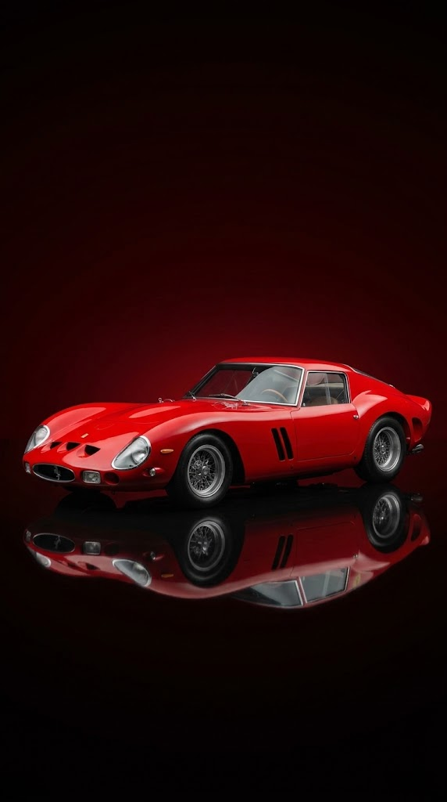
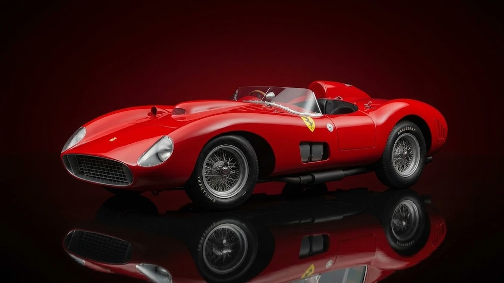
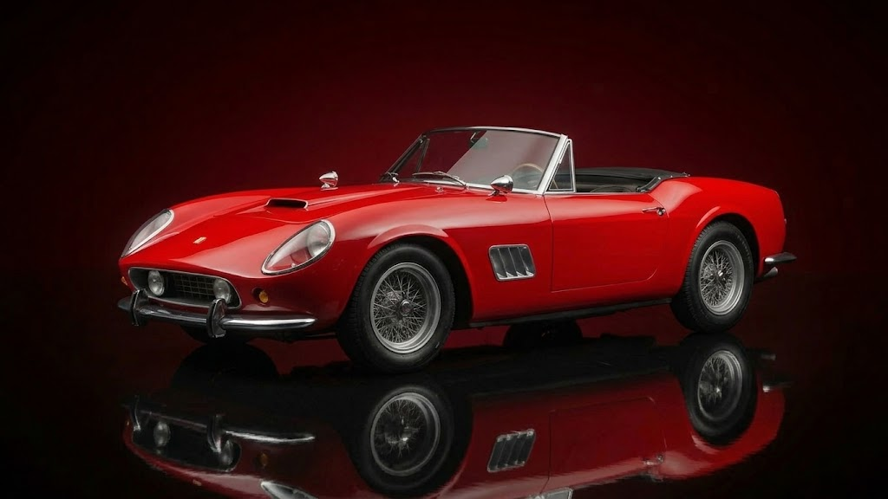
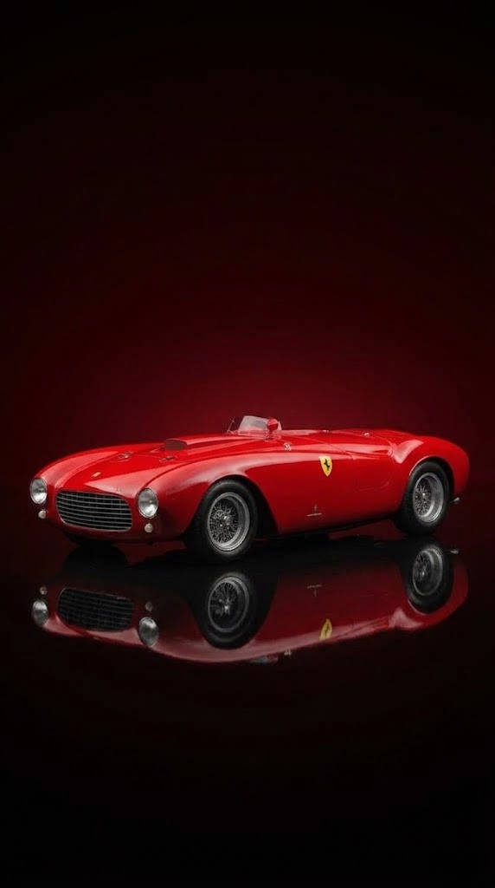
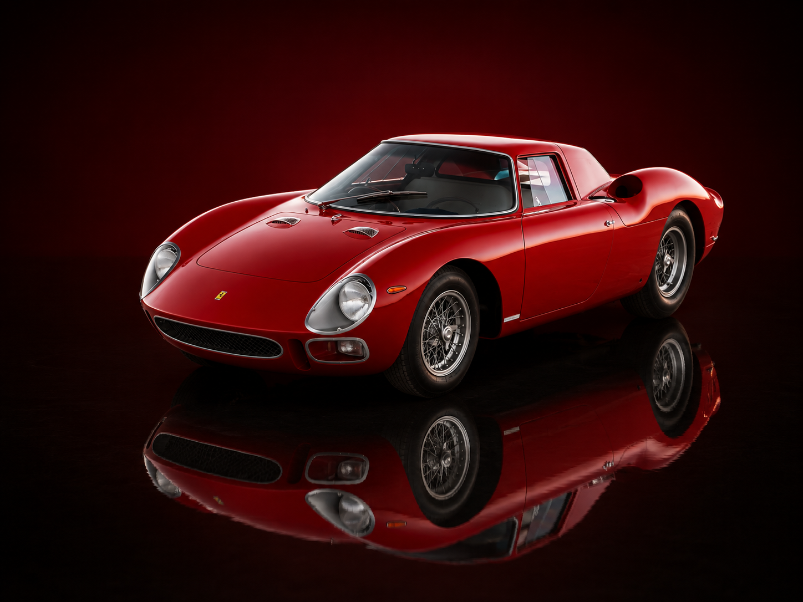
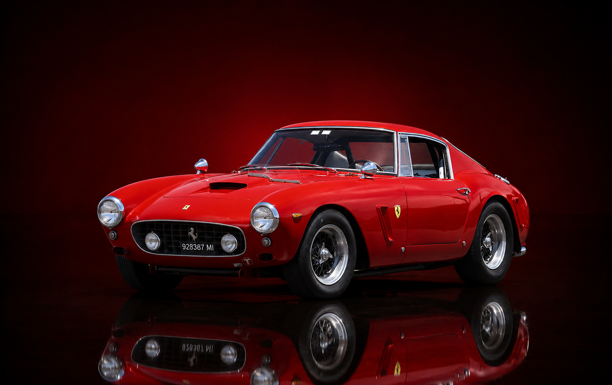
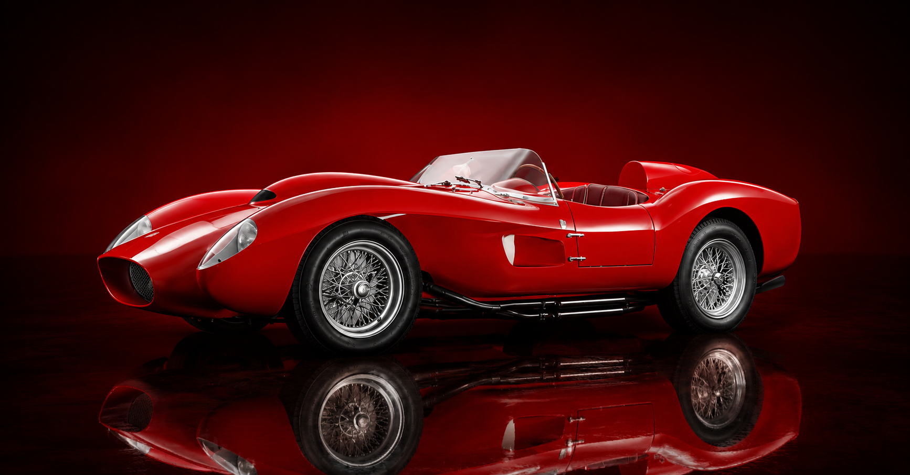
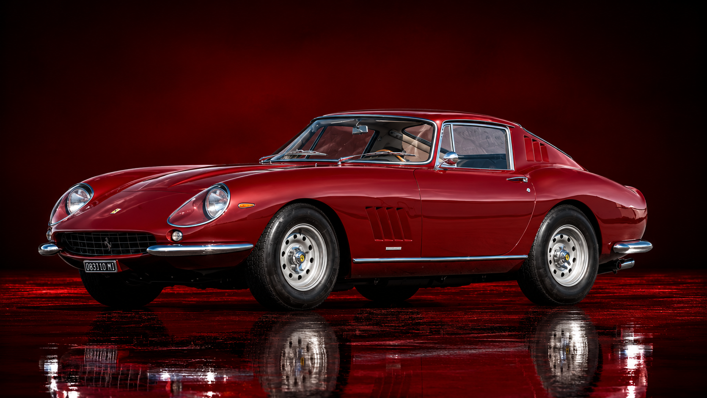

Aprenda criando

1. Ferrari 250 GTO (1962)
Aprox. US$ 51,7 milhões - Chassi 3765 comercializado em leilão, um dos carros de corrida mais valiosos de todos os tempos.

2. Ferrari 335 Sport Scaglietti (1957)
Aprox. US$ 35,7 milhões - Ícone do motorsport guiado por pilotos lendários nas 24 Horas de Le Mans e Mille Miglia.

3. Ferrari 250 GT SWB California Spider (1961)
Aprox. US$ 18,5 milhões - Exemplar raríssimo descoberto na famosa coleção Baillon em estado original de achado de garagem.

4. Ferrari 375 Plus Spider Competizione (1954)
Aprox. US$ 18,4 milhões - Monstro de corrida com motor V12 de 4.9 litros construído especificamente para provas de Endurance.

5. Ferrari 250 LM (1964)
Aprox. US$ 17,6 milhões - Protótipo de motor central-traseiro que marcou uma das vitórias mais célebres de Le Mans.

6. Ferrari 250 GT SWB Berlinetta Competizione (1960)
Aprox. US$ 16,5 milhões - Uma das combinações perfeitas entre carro de rua de luxo e máquina de vencer corridas.

7. Ferrari 250 Testa Rossa (1957)
Aprox. US$ 16,4 milhões - Famosa pelo design de para-lamas flutuantes 'pontoon fender' e pelas tampas de válvula vermelhas.

8. Ferrari 250 GT LWB California Spider Competizione (1959)
Aprox. US$ 15,2 milhões - Edição com entre-eixos longo e especificações completas de competição em alumínio.

9. Ferrari 250 GT SWB Berlinetta Speciale (1962)
Aprox. US$ 14,0 milhões - Carroçaria exclusiva desenhada pela Bertone com a frente inspirada em "nariz de tubarão".

10. Ferrari 290 MM (1956)
Aprox. US$ 13,4 milhões - Projetada para Juan Manuel Fangio disputar a histórica corrida Mille Miglia.

11. Ferrari 410 Sport Spider (1955)
Aprox. US$ 12,9 milhões - Pilotada por lendas como Carroll Shelby e Phil Hill na era de ouro do automobilismo.

12. Ferrari 275 GTB/4 Scaglietti (1967)
Aprox. US$ 10,1 milhões - Icônica unidade que pertenceu ao lendário ator e piloto Steve McQueen.